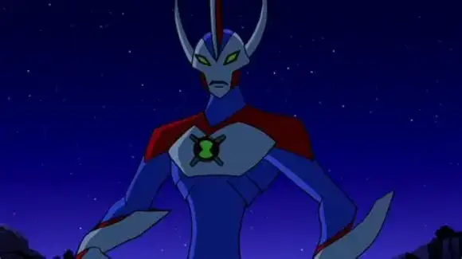

Espécie
Nome: To’kustar
Os To’kustars nascem das Tempestades Cósmicas, fenômenos energéticos que ocorrem na borda da galáxia.
Criaturas colossais, com altura que pode ultrapassar centenas de metros. Possuem uma pele espessa e
resistente, capaz de suportar condições extremas. Seus corpos são musculosos, adaptados para suportar seu
enorme peso e realizar movimentos poderosos. Os To’kustar têm uma longevidade impressionante, vivendo por
milhares de anos. São conhecidos por sua força descomunal e resistência física, tornando-os adversários
formidáveis
em combate. Apesar de sua aparência intimidadora, os To’kustar são geralmente pacíficos, preferindo evitar
conflitos sempre que possível.
Planeta
Nome: Tempestades Cósmicas
Não é exatamente um planeta, mas as Tempestades Cósmicas são regiões do espaço onde intensas atividades
energéticas ocorrem, resultando na
formação de criaturas como os To’kustar. Essas tempestades são caracterizadas por campos magnéticos
instáveis,
radiação cósmica intensa e partículas energéticas em alta velocidade. O ambiente é hostil, com temperaturas
extremas e radiação que pode ser letal para a maioria das formas de vida convencionais. No entanto, para os
To’kustar, essas condições são ideais, fornecendo a energia necessária para seu desenvolvimento e
sobrevivência.
Poderes e Habilidades
Tamanho maximizado
Pode aumentar seu tamanho para alturas colossais, tornando-se uma verdadeira força da natureza. É o alien
mais alto do Omnitrix, capaz de esmagar inimigos gigantes com facilidade.
Superforça
Sua força é praticamente ilimitada, comparável a entidades cósmicas.
Raios cósmicos
Pode disparar poderosos raios de energia cósmica do seus braços quando cruzados, capazes de destruir
estruturas inteiras.
Resistência extrema
Sua pele espessa o torna quase invulnerável a ataques físicos e energéticos.
Sobrevivência no espaço
Pode sobreviver e se mover livremente no vácuo do espaço sem a necessidade de oxigênio.
Velocidade cósmica (erro do Superomnitrix):
Quando Ben ativou o Superomnitrix, Gigante ganhou a habilidade de se mover em velocidades incríveis, quase
instantaneamente, permitindo-lhe atravessar vastas distâncias em segundos, mas isso foi considerado um erro de
animação.
Fraquezas
Em ambientes pequenos, sua dimensão pode ser um problema. Por ser enorme, é difícil se esconder ou escapar de
ataques direcionados. Ben raramente usa o Gigante, pois é uma forma extremamente poderosa e difícil de
controlar.
Forma Suprema

ben10.fandom.com
Pode manipular energia cósmica pura, criando raios e discos de energia muito mais poderosos que os do
Gigante normal. Com as mãos, pode gerar tempestades cósmicas capazes de devastar áreas inteiras. Sua força é
ampliada, podendo esmagar qualquer inimigo menor com facilidade. Apesar do tamanho colossal, pode se mover
em velocidades impressionantes. Diferente do Gigante comum, o Supremo pode voar livremente. Sua resistência
é quase absoluta, tornando-o praticamente indestrutível. Pode alterar sua altura, adaptando-se ao ambiente
ou à batalha. Seus poderes estão ligados às tempestades cósmicas, podendo ser menos eficaz em ambientes sem
energia cósmica abundante.

{kind=link}